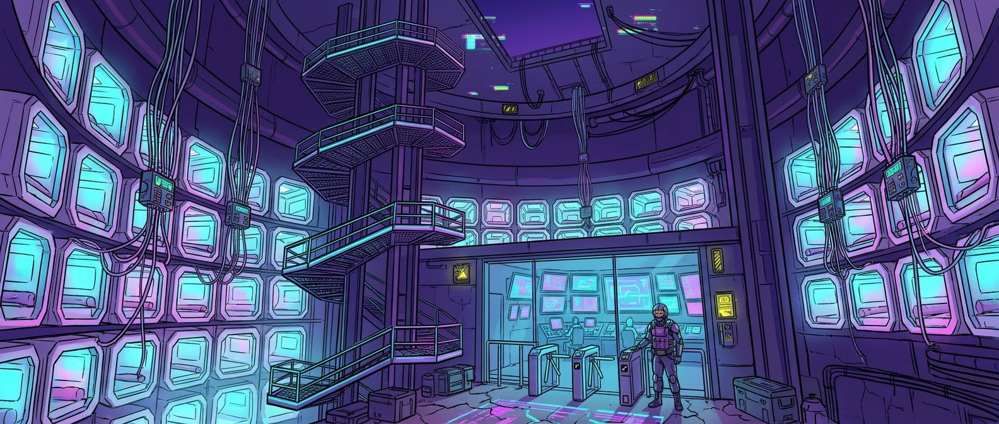

Places » L'Alveare
Description
An old grain silo in the harbour, emptied out and lined with cradles: white capsules stacked into a hive thirty floors high, wired to the ceiling by cables as thin as hair. You come in at night with your badge, lie down, close the capsule. Next morning there are twelve credits in your account, and a slight headache.
Characters
- Teo, the brother of Mara Iezzi, slept in cradle 3-117.
- Livia Sander drops by now and then, unannounced.
Master's secret
Floor zero is no storeroom: it is a relay that sends the Tower, every night, whatever the sleepers have computed. Touch it with a deck and an old man's voice asks, kindly: “Who is it?”